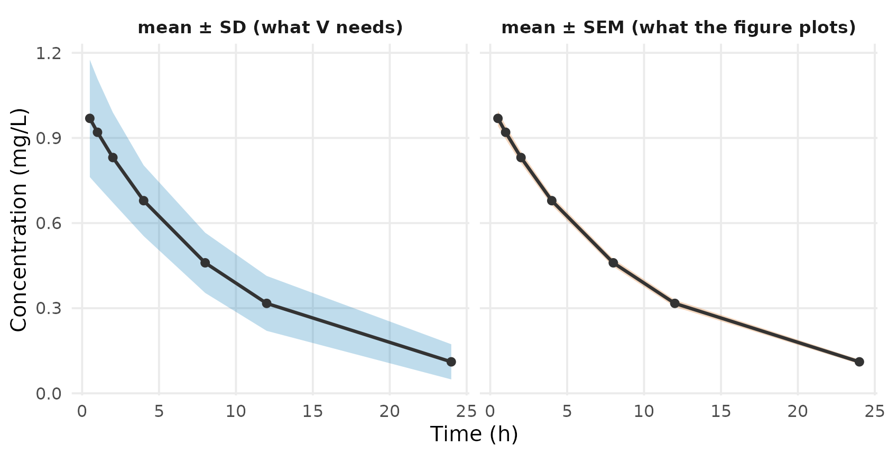

The problem
Every study passed to admControl() needs a mean vector
E, a covariance V, a sample size
n, the observation times and a dosing event
table ev. A published figure gives you a mean and an error
bar.
Reading the mean off is easy. Getting the variance right is where
aggregate analyses go wrong: a standard error used as a standard
deviation is off by a factor of sqrt(n), and the fit does
not tell you — the structural parameters come back correct and only the
between-subject variability collapses. This vignette converts a
published figure into E, V and n,
and shows what that mistake costs.
What V must be
V is the spread across subjects, not the
precision of the mean. admixr2’s likelihood is
where r is the mismatch between observed and predicted
means, and V_pred = J Omega J' + Sigma — one subject’s
covariance, built from the between-subject variability and the residual
error. V_obs must be the same object, and the sample size
n sits outside it. Hand the likelihood a standard error
squared and you have told it about n twice.
So V = SD^2, never SEM^2.
What is the error bar?
Read the caption. If it does not say, treat the error bar as unknown rather than assuming:
| Figure reports | Convert to SD | Note |
|---|---|---|
| Standard deviation (SD) | SD |
Use directly |
| Standard error (SEM) | SD = SEM * sqrt(n) |
Off by sqrt(n) if confused |
| 95% CI of the mean | SD = (upper - lower) * sqrt(n) / 3.92 |
3.92 = 2 × 1.96; for small n use
2 * qt(0.975, n - 1)
|
| Interquartile range | SD ~ IQR / 1.35 |
Assumes normality |
| LS-mean SE (from an MMRM) | SD ~ SE * sqrt(n) |
Biased small — see below |
sd_from_sem <- function(sem, n) sem * sqrt(n)
sd_from_ci <- function(lower, upper, n) (upper - lower) * sqrt(n) / (2 * qt(0.975, n - 1))
sd_from_iqr <- function(q1, q3) (q3 - q1) / 1.35An LS-mean SE deserves care because it is the one row that can
silently reproduce the error this vignette is about. It comes out of a
model, usually an MMRM: baseline and covariate adjustment remove
variance from the residual, and the covariance structure borrows across
visits, so SE * sqrt(n) is usually smaller
than the true between-subject SD — the same direction as mistaking a SEM
for an SD. It also describes whatever the MMRM modelled, often a change
from baseline rather than an absolute value. Prefer a descriptive SD
from the paper’s own baseline table, or from a comparable study.
A figure reporting standard errors
A 50 mg arm, 60 subjects, digitised from a concentration–time figure whose caption reads “mean ± SEM” — the same arm used in PD and PK/PD data, before it was fitted:
times <- c(0.5, 1, 2, 4, 8, 12, 24)
E <- c(0.969, 0.920, 0.831, 0.679, 0.460, 0.317, 0.111) # mg/L
SEM <- c(0.0267, 0.0243, 0.0205, 0.0161, 0.0137, 0.0125, 0.0080)
n <- 60L
SD <- sd_from_sem(SEM, n)
round(SD, 3)
#> [1] 0.207 0.188 0.159 0.125 0.106 0.097 0.062The bars the figure plots are sqrt(60) — nearly eight
times — smaller than the standard deviations the fit needs. Plotting
both makes it concrete: the SEM band is far too tight to be a
between-subject spread.
band <- rbind(
data.frame(t = times, m = E, lo = E - SD, hi = E + SD, what = "mean ± SD (what V needs)"),
data.frame(t = times, m = E, lo = E - SEM, hi = E + SEM, what = "mean ± SEM (what the figure plots)"))
ggplot(band, aes(t, m)) +
geom_ribbon(aes(ymin = lo, ymax = hi, fill = what), alpha = 0.25) +
geom_line(linewidth = 0.9, colour = "grey20") +
geom_point(size = 1.8, colour = "grey20") +
facet_wrap(~ what) +
scale_fill_manual(values = c("mean ± SD (what V needs)" = "#0072B2",
"mean ± SEM (what the figure plots)" = "#D55E00"),
guide = "none") +
labs(x = "Time (h)", y = "Concentration (mg/L)") +
theme_minimal(base_size = 12) +
theme(panel.grid.minor = element_blank(),
strip.text = element_text(face = "bold", size = 10))
Passing V as a plain vector of variances is enough;
admixr2 expands it to a diagonal matrix and sets
method = "var":
pk_model <- function() {
ini({
tcl <- log(4) ; label("Log clearance (L/h)")
tv <- log(40) ; label("Log volume (L)")
prop.cp <- 0.1 ; label("Proportional residual error")
eta.cl ~ 0.09
eta.v ~ 0.04
})
model({
cl <- exp(tcl + eta.cl)
v <- exp(tv + eta.v)
d/dt(central) <- -(cl/v) * central
cp <- central / v
cp ~ prop(prop.cp)
})
}fit <- nlmixr2(pk_model, admData(), est = "adgh",
control = adghControl(studies = list(mg50 = study)))
fit
── nlmixr² adgh ──
OBJF AIC BIC Log-likelihood
adgh -1323.146 -1313.146 -1292.945 661.5729
── Time (sec fit$time): ──
optimize covariance elapsed other
elapsed 0.495 0.047 0.542 2.709
── Population Parameters (fit$parFixed or fit$parFixedDf): ──
Parameter Est. SE %RSE
tcl Log clearance (L/h) 1.556 0.01954 1.256
tv Log volume (L) 3.911 0.01546 0.3953
prop.cp Proportional residual error 0.09764
Back-transformed(95%CI) BSV(CV%) Shrink(SD)%
tcl 4.738 (4.56, 4.923) 25.9
tv 49.96 (48.47, 51.5) 19.7
prop.cp 0.09764
Covariance Type (fit$covMethod): r
No correlations in between subject variability (BSV) matrix
Full BSV covariance (fit$omega) or correlation (fit$omegaR; diagonals=SDs)
Distribution stats (mean/skewness/kurtosis/p-value) available in fit$shrink
Censoring (fit$censInformation): No censoring
Minimization message (fit$message):
NLOPT_XTOL_REACHED: Optimization stopped because xtol_rel or xtol_abs (above) was reached. What reading SEM as SD costs
Now make the mistake: use the plotted SEM as if it were
an SD, so V is n-fold too
small.
fit_wrong <- nlmixr2(
pk_model, admData(), est = "adgh",
control = adghControl(studies = list(
mg50 = list(E = E, V = SEM^2, n = n, times = times, # WRONG: SEM^2 as V
ev = rxode2::et(amt = 50, cmt = "central")))))
fit_wrong
── nlmixr² adgh ──
OBJF AIC BIC Log-likelihood
adgh -2942.689 -2932.689 -2912.488 1471.344
── Time (sec fit_wrong$time): ──
optimize covariance elapsed
1 1.036 0.042 1.078
── Population Parameters (fit_wrong$parFixed or fit_wrong$parFixedDf): ──
Parameter Est. SE %RSE
tcl Log clearance (L/h) 1.558 0.003057 0.1962
tv Log volume (L) 3.908 0.002135 0.05464
prop.cp Proportional residual error 0.008208
Back-transformed(95%CI) BSV(CV%) Shrink(SD)%
tcl 4.749 (4.72, 4.777) 4.18
tv 49.79 (49.58, 50) 2.94
prop.cp 0.008208
Covariance Type (fit_wrong$covMethod): r
No correlations in between subject variability (BSV) matrix
Full BSV covariance (fit_wrong$omega)
or correlation (fit_wrong$omegaR; diagonals=SDs)
Distribution stats (mean/skewness/kurtosis/p-value) available in $shrink
Censoring (fit_wrong$censInformation): No censoring
Minimization message (fit_wrong$message):
NLOPT_XTOL_REACHED: Optimization stopped because xtol_rel or xtol_abs (above) was reached. Clearance and volume are unchanged to three figures. The between-subject variability is not:
Omega shrinks by more than an order of magnitude on both
random effects, because the model is asked to reproduce a
between-subject spread n times tighter than the real one.
V_pred = J Omega J' + Sigma is linear in Omega
and in the residual variance, so both shrink together and the structural
parameters are free to stay where they were. The shrinkage stops short
of the full factor of n only because the mean-mismatch term
r' V_pred^-1 r does not rescale.
Nothing in the point estimates warns you. The precision does:
round(c(RSE_CL_correct = fit$parFixedDf["tcl", "%RSE"],
RSE_CL_wrong = fit_wrong$parFixedDf["tcl", "%RSE"]), 3)
#> RSE_CL_correct RSE_CL_wrong
#> 1.256 0.196Clearance comes back not just right but implausibly certain — its
standard error tightens about 6.4-fold, of order sqrt(n).
An RSE that looks too good for digitised literature data, or an IIV that
comes back near zero, is the tell.
Two things make this worse than the demo suggests:
-
The structural parameters only survive because this model
fits. With a misspecified model,
ris not zero, and aV_predthat isntimes too small weights that mismatchntimes too heavily — dragging the structural estimates to close a gap they cannot close. -
In a multi-study fit, one bad
Vcaptures the whole fit. GettingVwrong in a single study inflates that study’s weight in the joint likelihood roughlyn-fold. It then dominates every other arm and biases the shared parameters. This is the usual way admixr2 is used, and it is where the mistake is most expensive.
Why V is usually diagonal
A figure gives one error bar per time point and nothing about how the
times covary, so the off-diagonal entries of V are not
available from published summaries. A diagonal V selects
method = "var", which skips the Cholesky solve the
full-covariance path needs. This is the honest default for literature
data. The full-covariance path is available when you have the
subject-level matrix and can compute
cov.wt(dv_mat, method = "ML")$cov — see Getting started.
Note the denominator. admixr2’s likelihood wants the ML
(n) variance, while a published SD is the unbiased
(n - 1) sample SD, so strictly
V = SD^2 * (n - 1) / n. At n = 60 that is a
1.7% change and is usually ignored; below n of about 15 it
is worth applying. The method = "ML" rule matters most when
you compute V yourself from subject-level data.
Sample size
n is the number of subjects contributing to the summary,
per arm — not the total across arms, and not the number of
observations.
-
Dropout.
noften falls over time, so a figure’s late points may rest on fewer subjects than its early ones. Convert each point’s error bar with thenthat applies to it, and pass the number contributing to the observations you are fitting — the number at risk, not the number randomised. -
Per-endpoint
n. PK and PD are not always measured in the same people. A study’sobservationsentries may each carry their ownn.
Absolute values or change from baseline?
Many PD papers report a least-squares-mean change from baseline rather than an absolute value. Either can be fitted, but the model must predict the same quantity as the data:
- Fitting absolute values needs a baseline parameter in the model; see PD and PK/PD data.
- Fitting a change means the model output must itself be a change, and
the SD of the change — not of the absolute value — is the one
Vneeds.
Studies that report different quantities must be converted to a common one before fitting, not after.
When there is no variability at all
A paper often gives a mean with no SD, SEM or CI — a placebo arm reported only in a footnote, for example.
You then have to assume a V, and it is worth knowing
what that assumption does. Refit the arm above with the SD deliberately
wrong in each direction:
assume <- function(mult) {
f <- nlmixr2(pk_model, admData(), est = "adgh",
control = adghControl(studies = list(
mg50 = list(E = E, V = (SD * mult)^2, n = n, times = times,
ev = rxode2::et(amt = 50, cmt = "central")))))
c(exp(f$theta[["tcl"]]), exp(f$theta[["tv"]]),
diag(f$omega)[["eta.cl"]], diag(f$omega)[["eta.v"]])
}
mults <- c(0.5, 1, 2, 4)
res <- t(vapply(mults, assume, numeric(4)))
tbl <- data.frame(
`Assumed SD` = c("0.5x (too small)", "1x (correct)",
"2x (too large)", "4x (too large)"),
CL = round(res[, 1], 2),
V = round(res[, 2], 2),
`var(eta.cl)` = round(res[, 3], 3),
`var(eta.v)` = round(res[, 4], 3),
check.names = FALSE
)
knitr::kable(tbl, row.names = FALSE,
caption = "Fit against a deliberately wrong V. Truth: CL = 5, V = 50, var(eta.cl) = 0.09, var(eta.v) = 0.04.")| Assumed SD | CL | V | var(eta.cl) | var(eta.v) |
|---|---|---|---|---|
| 0.5x (too small) | 4.74 | 49.89 | 0.017 | 0.010 |
| 1x (correct) | 4.74 | 49.96 | 0.065 | 0.038 |
| 2x (too large) | 4.78 | 49.85 | 0.264 | 0.111 |
| 4x (too large) | 1.82 | 0.85 | 0.029 | 5.937 |
Omega follows the assumption in whichever direction it
is wrong: too small and the between-subject variability collapses, too
large and it inflates several-fold. V is data the model
must reproduce, not a weight — so an assumed V is an
assumption about the IIV you are trying to estimate, and it propagates
to every study through the shared Omega. Push it far enough
and the fit stops being sensible at all: at 4x the
structural parameters leave the building.
There is no safe direction to err in. In rough order of preference:
- Take the variability from a comparable arm, or a comparable study of the same endpoint.
- Use a published typical SD for that endpoint and population.
- Exclude the study.
Whichever you choose, record it, and refit across the range you consider plausible. If the estimates move, the assumption is doing the work and the result belongs in a sensitivity table rather than a headline.
Notes
-
The error bar is the dominant error source.
Digitisation software is accurate to a few percent; mistaking a SEM for
an SD is an error of
sqrt(n). Reading the caption matters more than the pixels. -
Geometric means. A paper reporting a geometric mean
and CV% is describing a log-normal distribution, while
EandVare arithmetic moments. Convert before fitting. - Digitising. WebPlotDigitizer is the usual tool. Extracting a figure twice and comparing is a cheap check.
-
%RSEis on the estimation scale. These parameters are log-scale, so an RSE ontclis not an RSE on clearance. - PD specifics — baselines, placebo arms, two endpoints — are covered in PD and PK/PD data.